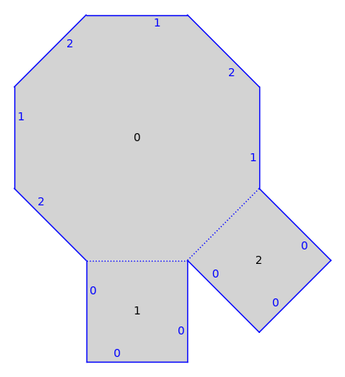
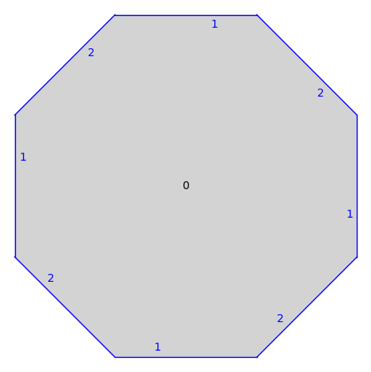
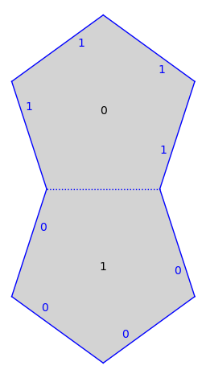
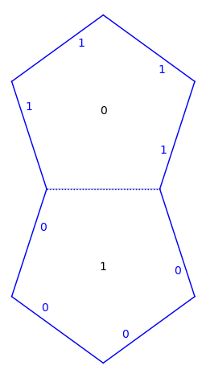
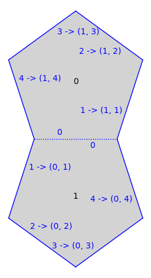

surface_legacy#
Legacy data structures for surfaces built from polygons.
All surfaces in sage-flatsurf are built from polygons whose sides are
identified by similarities. This module provides deprecated data structures to
describe such surfaces. Currently, there are two fundamental such data
structures, namely Surface_list and Surface_dict. The former labels
the polygons that make up a surface by non-negative integers and the latter can
use arbitrary labels.
In principle there is nothing wrong with this approach. However, the
implementation is plagued by feature creep so we tried to clean things up in
2023 and reimplemented these in flatsurf.geometry.surface.
All the surfaces here inherit from Surface which describes the
contract that surfaces used to satisfy. As an absolute minimum, they implement
Surface.polygon() which maps polygon labels to actual polygons, and
Surface.opposite_edge() which describes the gluing of polygons.
EXAMPLES:
We built a torus by gluing the opposite sides of a square:
sage: from flatsurf import Polygon
sage: from flatsurf.geometry.surface import Surface_list
sage: S = Surface_list(QQ)
doctest:warning
...
UserWarning: Surface_list has been deprecated and will be removed in a future version of sage-flatsurf; use MutableOrientedSimilaritySurface instead
sage: S.add_polygon(Polygon(vertices=[(0, 0), (1, 0), (1, 1), (0, 1)]))
0
sage: S.set_edge_pairing(0, 0, 0, 2)
sage: S.set_edge_pairing(0, 1, 0, 3)
sage: S.polygon(0)
Polygon(vertices=[(0, 0), (1, 0), (1, 1), (0, 1)])
sage: S.opposite_edge(0, 0)
(0, 2)
- flatsurf.geometry.surface_legacy.ConeSurface(surface, *args, **kwargs)[source]#
Refine the category of
surface.This function is deprecated and should not be used anymore.
EXAMPLES:
sage: from flatsurf import Surface_list, polygons, ConeSurface sage: S = Surface_list(QQ) sage: S.add_polygon(polygons.square()) 0 sage: S.set_edge_pairing(0, 0, 0, 2) sage: S.set_edge_pairing(0, 1, 0, 3) sage: S = ConeSurface(S) doctest:warning ... UserWarning: ConeSurface() has been deprecated and will be removed in a future version of sage-flatsurf; there is no distinction between an (underlying) Surface and the SimilaritySurface types anymore. Calling set_immutable() on this surface should determine the category of this surface automatically so calling ConeSurface() should not be necessary in this case. You can still explicitly refine the category of a surface with _refine_category_() but this is not recommended. We will now refine the category of this surface to make sure that it is in the Category of connected without boundary oriented cone surfaces. sage: S.category() Category of connected without boundary finite type oriented cone surfaces sage: S.set_immutable() sage: S.category() Category of connected without boundary finite type translation surfaces
- flatsurf.geometry.surface_legacy.DilationSurface(surface, *args, **kwargs)[source]#
Refine the category of
surface.This function is deprecated and should not be used anymore.
EXAMPLES:
sage: from flatsurf import Surface_list, polygons, DilationSurface sage: S = Surface_list(QQ) sage: S.add_polygon(polygons.square()) 0 sage: S.set_edge_pairing(0, 0, 0, 2) sage: S.set_edge_pairing(0, 1, 0, 3) sage: S = DilationSurface(S) doctest:warning ... UserWarning: DilationSurface() has been deprecated and will be removed in a future version of sage-flatsurf; there is no distinction between an (underlying) Surface and the SimilaritySurface types anymore. Calling set_immutable() on this surface should determine the category of this surface automatically so calling DilationSurface() should not be necessary in this case. You can still explicitly refine the category of a surface with _refine_category_() but this is not recommended. We will now refine the category of this surface to make sure that it is in the Category of connected without boundary oriented positive dilation surfaces. sage: S.category() Category of connected without boundary finite type oriented positive dilation surfaces sage: S.set_immutable() sage: S.category() Category of connected without boundary finite type translation surfaces
- flatsurf.geometry.surface_legacy.HalfDilationSurface(surface, *args, **kwargs)[source]#
Refine the category of
surface.This function is deprecated and should not be used anymore.
EXAMPLES:
sage: from flatsurf import Surface_list, polygons, HalfDilationSurface sage: S = Surface_list(QQ) sage: S.add_polygon(polygons.square()) 0 sage: S.set_edge_pairing(0, 0, 0, 2) sage: S.set_edge_pairing(0, 1, 0, 3) sage: S = HalfDilationSurface(S) doctest:warning ... UserWarning: HalfDilationSurface() has been deprecated and will be removed in a future version of sage-flatsurf; there is no distinction between an (underlying) Surface and the SimilaritySurface types anymore. Calling set_immutable() on this surface should determine the category of this surface automatically so calling HalfDilationSurface() should not be necessary in this case. You can still explicitly refine the category of a surface with _refine_category_() but this is not recommended. We will now refine the category of this surface to make sure that it is in the Category of connected without boundary oriented dilation surfaces. sage: S.category() Category of connected without boundary finite type oriented dilation surfaces sage: S.set_immutable() sage: S.category() Category of connected without boundary finite type translation surfaces
- flatsurf.geometry.surface_legacy.HalfTranslationSurface(surface, *args, **kwargs)[source]#
Refine the category of
surface.This function is deprecated and should not be used anymore.
EXAMPLES:
sage: from flatsurf import Surface_list, polygons, HalfTranslationSurface sage: S = Surface_list(QQ) sage: S.add_polygon(polygons.square()) 0 sage: S.set_edge_pairing(0, 0, 0, 2) sage: S.set_edge_pairing(0, 1, 0, 3) sage: S = HalfTranslationSurface(S) doctest:warning ... UserWarning: HalfTranslationSurface() has been deprecated and will be removed in a future version of sage-flatsurf; there is no distinction between an (underlying) Surface and the SimilaritySurface types anymore. Calling set_immutable() on this surface should determine the category of this surface automatically so calling HalfTranslationSurface() should not be necessary in this case. You can still explicitly refine the category of a surface with _refine_category_() but this is not recommended. We will now refine the category of this surface to make sure that it is in the Category of connected without boundary oriented half translation surfaces. sage: S.category() Category of connected without boundary finite type oriented half translation surfaces sage: S.set_immutable() sage: S.category() Category of connected without boundary finite type translation surfaces
- class flatsurf.geometry.surface_legacy.LabelWalker(surface, deprecation_warning=True)[source]#
Take a canonical walk around the surface and find the labels of polygons.
We start at the base_label(). Then the labels are visited in order involving the combinatorial distance from the base_label(), where combinatorial distance measures the minimal number of edges which need to be crossed to reach the polygon with a givel label. Ties are broken using lexicographical order on the numbers associated to edges crossed (labels are not used in this lexicographical ordering).
- edge_back(label, limit=None)[source]#
Return the “canonical” edge to walk through to get closer to the base_label, or None if label already is the base_label.
Remark: This could be slow on infinite surfaces!
- find_a_new_label()[source]#
Finds a new label, stores it, and returns it. Returns None if we have already found all labels.
- label_dictionary()[source]#
Return a dictionary mapping labels to integers which gives a canonical order on labels.
- label_to_number(label, search=False, limit=100)[source]#
Return the number associated to the provided label.
Returns an error if the label has not already been found by the walker unless search=True in which case we look for the label. We look by continuing to look for the label by walking over the surface visiting the next limit many polygons.
- flatsurf.geometry.surface_legacy.RationalConeSurface(surface, *args, **kwargs)[source]#
Refine the category of
surface.This function is deprecated and should not be used anymore.
EXAMPLES:
sage: from flatsurf import Surface_list, polygons, RationalConeSurface sage: S = Surface_list(QQ) sage: S.add_polygon(polygons.square()) 0 sage: S.set_edge_pairing(0, 0, 0, 2) sage: S.set_edge_pairing(0, 1, 0, 3) sage: S = RationalConeSurface(S) doctest:warning ... UserWarning: RationalConeSurface() has been deprecated and will be removed in a future version of sage-flatsurf; there is no distinction between an (underlying) Surface and the SimilaritySurface types anymore. Calling set_immutable() on this surface should determine the category of this surface automatically so calling RationalConeSurface() should not be necessary in this case. You can still explicitly refine the category of a surface with _refine_category_() but this is not recommended. We will now refine the category of this surface to make sure that it is in the Category of connected without boundary oriented rational cone surfaces. sage: S.category() Category of connected without boundary finite type oriented rational cone surfaces sage: S.set_immutable() sage: S.category() Category of connected without boundary finite type translation surfaces
- flatsurf.geometry.surface_legacy.SimilaritySurface(surface, *args, **kwargs)[source]#
Refine the category of
surface.This function is deprecated and should not be used anymore.
EXAMPLES:
sage: from flatsurf import Surface_list, polygons, SimilaritySurface sage: S = Surface_list(QQ) doctest:warning ... UserWarning: Surface_list has been deprecated and will be removed in a future version of sage-flatsurf; use MutableOrientedSimilaritySurface instead sage: S.add_polygon(polygons.square()) 0 sage: S.set_edge_pairing(0, 0, 0, 2) sage: S.set_edge_pairing(0, 1, 0, 3) sage: S = SimilaritySurface(S) doctest:warning ... UserWarning: SimilaritySurface() has been deprecated and will be removed in a future version of sage-flatsurf; there is no distinction between an (underlying) Surface and the SimilaritySurface types anymore. Calling set_immutable() on this surface should determine the category of this surface automatically so calling SimilaritySurface() should not be necessary in this case. You can still explicitly refine the category of a surface with _refine_category_() but this is not recommended. We will now refine the category of this surface to make sure that it is in the Category of connected without boundary oriented similarity surfaces. sage: S.category() Category of connected without boundary finite type oriented similarity surfaces sage: S.set_immutable() sage: S.category() Category of connected without boundary finite type translation surfaces
- class flatsurf.geometry.surface_legacy.Surface(base_ring, base_label, finite, mutable, category=None, deprecation_warning=True)[source]#
Abstract base class of all surfaces that are built from a set of polygons with edges identified. The identifications are compositions of homothety, rotations and translations, i.e., similarities that ensure that the surface is oriented.
Concrete implementations of a surface must implement at least
polygon()andopposite_edge().To be able to modify a surface, subclasses should also implement
_change_polygon,_set_edge_pairing,_add_polygon,_remove_polygon.For concrete implementations of a Surface, see, e.g.,
Surface_listandSurface_dict.INPUT:
base_ring– the ring containing the coordinates of the vertices of the polygonsbase_label– the label of a chosen special polygon in the surface, seebase_label()finite– whether this is a finite surface, seeis_finite_type()mutable– whether this is a mutable surface; can be changed later withset_immutable()
EXAMPLES:
sage: from flatsurf.geometry.surface import Surface, Surface_list, Surface_dict sage: S = Surface_list(QQ) sage: isinstance(S, Surface) True sage: S = Surface_dict(QQ) doctest:warning ... UserWarning: Surface_dict has been deprecated and will be removed in a future version of sage-flatsurf; use MutableOrientedSimilaritySurface instead sage: isinstance(S, Surface) True
- add_polygon(new_polygon, gluing_list=None, label=None)[source]#
Adds a the provided polygon to the surface. Utilizes gluing_list for the gluing data for edges (which must be a list of pairs representing edges of length equal to number of edges of the polygon).
If the parameter label is provided, the Surface attempts to use this as the label for the new_polygon. However, this may fail depending on the implementation.
Returns the label assigned to the new_polygon (which may differ from the label provided).
- change_edge_gluing(label1, edge1, label2, edge2)#
Update the gluing so that (
label1,edge1) is glued to (label2,edge2).
- change_polygon(label, new_polygon, gluing_list=None)[source]#
Assuming label is currently in the list of labels, change the poygon assigned to the provided label to new_polygon, and glue the edges according to gluing_list (which must be a list of pairs of length equal to number of edges of the polygon).
- change_polygon_gluings(label, glue_list)[source]#
Updates the list of glued polygons according to the provided list, which is a list of pairs (pp,ee) whose position in the list describes the edge of the polygon with the provided label.
This method updates both the edges of the polygon with label “label” and updates the edges listed in the glue_list.
- graphical_surface(*args, **kwds)[source]#
Return a GraphicalSurface representing this surface.
By default this returns a cached version of the GraphicalSurface. If
cached=Falseis provided as a keyword option then a new GraphicalSurface is returned.All other parameters are passed on to
GraphicalSurfaceor itsprocess_options(). Note that this mutates the cached graphical surface for future calls.EXAMPLES:
Test the difference between the cached graphical_surface and the uncached version:
sage: from flatsurf import translation_surfaces sage: s = translation_surfaces.octagon_and_squares() sage: s.plot() ...Graphics object consisting of 32 graphics primitives
sage: s.graphical_surface(adjacencies=[]).plot() ...Graphics object consisting of 18 graphics primitives

- is_triangulated(limit=None)[source]#
EXAMPLES:
sage: import flatsurf sage: G = SymmetricGroup(4) sage: S = flatsurf.translation_surfaces.origami(G('(1,2,3,4)'), G('(1,4,2,3)')) sage: S.is_triangulated() False sage: S.triangulate().is_triangulated() True
- label_iterator(polygons=False)[source]#
Iterator over all polygon labels.
Subclasses should consider overriding this method for increased performance.
- num_polygons()[source]#
Return the number of polygons making up the surface, or sage.rings.infinity.Infinity if the surface is infinite.
This is a generic method. On a finite surface it will be linear time in the edges the first time it is run, then constant time (assuming no mutation occurs).
Subclasses should consider overriding this method for increased performance.
- opposite_edge(label, e=None)[source]#
Given the label
labelof a polygon and an edgeein that polygon returns the pair (ll,ee) to which this edge is glued.This method must be overridden in subclasses.
- plot(*args, **kwds)[source]#
Return a plot of the surface.
The parameters are passed on to
graphical_surface()andflatsurf.graphical.surface.GraphicalSurface.plot(). Consult their documentation for details.EXAMPLES:
sage: import flatsurf sage: S = flatsurf.translation_surfaces.veech_double_n_gon(5) sage: S.plot() ...Graphics object consisting of 21 graphics primitives
Keywords are passed on to the underlying plotting routines, see
flatsurf.graphical.surface.GraphicalSurface.plot()for details:sage: S.plot(fill=None) ...Graphics object consisting of 21 graphics primitives
Note that some keywords mutate the underlying cached graphical surface, see
graphical_surface():sage: S.plot(edge_labels='gluings and number') ...Graphics object consisting of 23 graphics primitives

- point(label, position, limit=None, ring=None)[source]#
Return the
flatsurf.geometry.surface_objects.SurfacePointof this surface atpositionin the polygonlabel.INPUT:
label– a label of a polygon in this surface, seelabel_iterator()position– a vector with coordinates in this surface’s base ring
EXAMPLES:
sage: from flatsurf import Polygon sage: from flatsurf.geometry.surface import Surface_list sage: S = Surface_list(QQ) sage: S.add_polygon(Polygon(vertices=[(0, 0), (1, 0), (1, 1), (0, 1)])) 0 sage: S.set_edge_pairing(0, 0, 0, 2) sage: S.set_edge_pairing(0, 1, 0, 3) sage: S.point(0, (0, 0)) Vertex 0 of polygon 0
- polygon(label)[source]#
Return the polygon with the provided label.
This method must be overridden in subclasses.
- remove_polygon(label)[source]#
Remove the polygon with the provided label. Causes a ValueError if the base_label is removed.
- set_default_graphical_surface(graphical_surface)[source]#
Replace the default graphical surface with the provided GraphicalSurface.
- class flatsurf.geometry.surface_legacy.Surface_dict(base_ring=None, surface=None, copy=None, mutable=None, category=None, deprecation_warning=True)[source]#
A mutable
Surfaceusing a dict to store polygons and gluings.Unlike
Surface_list, this surface is not limited to integer labels. However,Surface_listis likely more efficient for most applications.ALGORITHM:
Internally, we maintain a dict
_pfor storing polygons together with gluing data.Each
_p[label]is typically a pair(polygon, gluing_dict)wheregluing_dictis mapsother_labeltoother_edgesuch thatopposite_edge(label, edge)returns_p[label][1][edge].INPUT:
base_ring– ring orNone(default:None); the ring containing the coordinates of the vertices of the polygons. IfNone, the base ring will be the one ofsurface.surface– a surface orNone(default:None); a surface to be copied or referenced (seecopy). IfNone, the surface is initially empty.copy– boolean orNone(default:None); whether the data underlyingsurfaceis copied into this surface or just a reference to that surface is kept. IfNone, a sensible default is chosen, namelysurface.is_mutable().mutable– boolean orNone(default:None); whether this surface is mutable. WhenNone, the surface will be mutable iffsurfaceisNone.
EXAMPLES:
sage: from flatsurf import polygons, Surface_dict sage: p=polygons.regular_ngon(10) sage: s=Surface_dict(base_ring=p.base_ring()) doctest:warning ... UserWarning: Surface_dict has been deprecated and will be removed in a future version of sage-flatsurf; use MutableOrientedSimilaritySurface instead sage: s.add_polygon(p,label="A") 'A' sage: s.change_polygon_gluings("A",[("A",(e+5)%10) for e in range(10)]) sage: s.change_base_label("A") sage: s.set_immutable() sage: TestSuite(s).run()
- class flatsurf.geometry.surface_legacy.Surface_list(base_ring=None, surface=None, copy=None, mutable=None, category=None, deprecation_warning=True)[source]#
A fast mutable
Surfaceusing a list to store polygons and gluings.ALGORITHM:
Internally, we maintain a list
_pfor storing polygons together with gluing data.Each
_p[label]is typically a pair(polygon, gluing_list)wheregluing_listis a list of pairs(other_label, other_edge)such thatopposite_edge(label, edge)returns_p[label][1][edge].INPUT:
base_ring– ring orNone(default:None); the ring containing the coordinates of the vertices of the polygons. IfNone, the base ring will be the one ofsurface.surface– a surface orNone(default:None); a surface to be copied or referenced (seecopy). IfNone, the surface is initially empty.copy– boolean orNone(default:None); whether the data underlyingsurfaceis copied into this surface or just a reference to that surface is kept. IfNone, a sensible default is chosen, namelysurface.is_mutable().mutable– boolean orNone(default:None); whether this surface is mutable. WhenNone, the surface will be mutable iffsurfaceisNone.
EXAMPLES:
sage: from flatsurf import polygons, Surface_list, Polygon, similarity_surfaces sage: p=polygons.regular_ngon(5) sage: s=Surface_list(base_ring=p.base_ring()) doctest:warning ... UserWarning: Surface_list has been deprecated and will be removed in a future version of sage-flatsurf; use MutableOrientedSimilaritySurface instead sage: s.add_polygon(p) # gets label 0 0 sage: s.add_polygon( (-matrix.identity(2))*p ) # gets label 1 1 sage: s.change_polygon_gluings(0,[(1,e) for e in range(5)]) sage: # base label defaults to zero. sage: s.set_immutable() sage: TestSuite(s).run()
We surgically add a square into an infinite billiard surface:
sage: p = Polygon(vertices=[(0,0),(4,0),(0,3)]) sage: s = similarity_surfaces.billiard(p) sage: ts=s.minimal_cover(cover_type="translation").copy(relabel=True, mutable=True) doctest:warning ... UserWarning: copy() has been deprecated and will be removed from a future version of sage-flatsurf; for surfaces of finite type use MutableOrientedSimilaritySurface.from_surface() instead. Use relabel({old: new for (new, old) in enumerate(surface.labels())}) for integer labels. However, there is no immediate replacement for lazy copying of infinite surfaces. Have a look at the implementation of flatsurf.geometry.delaunay.LazyMutableSurface and adapt it to your needs. sage: # Explore the surface a bit sage: ts.polygon(0) Polygon(vertices=[(0, 0), (4, 0), (0, 3)]) sage: ts.opposite_edge(0,0) (1, 2) sage: ts.polygon(1) Polygon(vertices=[(0, 0), (0, -3), (4, 0)]) sage: s = ts sage: l=s.add_polygon(polygons.square(side=4)) sage: s.change_edge_gluing(0,0,l,2) sage: s.change_edge_gluing(1,2,l,0) sage: s.change_edge_gluing(l,1,l,3) sage: print("Glued in label is "+str(l)) Glued in label is 2 sage: count = 0 sage: for x in ts.gluings(): ....: print(x) ....: count=count+1 ....: if count>15: ....: break ((0, 0), (2, 2)) ((0, 1), (3, 1)) ((0, 2), (4, 0)) ((2, 0), (1, 2)) ((2, 1), (2, 3)) ((2, 2), (0, 0)) ((2, 3), (2, 1)) ((3, 0), (5, 2)) ((3, 1), (0, 1)) ((3, 2), (6, 0)) ((4, 0), (0, 2)) ((4, 1), (7, 1)) ((4, 2), (8, 0)) ((1, 0), (8, 2)) ((1, 1), (9, 1)) ((1, 2), (2, 0)) sage: count = 0 sage: for l,p in ts.label_iterator(polygons=True): ....: print(str(l)+" -> "+str(p)) ....: count=count+1 ....: if count>5: ....: break 0 -> Polygon(vertices=[(0, 0), (4, 0), (0, 3)]) 2 -> Polygon(vertices=[(0, 0), (4, 0), (4, 4), (0, 4)]) 3 -> Polygon(vertices=[(0, 0), (-72/25, -21/25), (28/25, -96/25)]) 4 -> Polygon(vertices=[(0, 0), (0, 3), (-4, 0)]) 1 -> Polygon(vertices=[(0, 0), (0, -3), (4, 0)]) 5 -> Polygon(vertices=[(0, 0), (-28/25, 96/25), (-72/25, -21/25)])
- flatsurf.geometry.surface_legacy.TranslationSurface(surface, *args, **kwargs)[source]#
Refine the category of
surface.This function is deprecated and should not be used anymore.
EXAMPLES:
sage: from flatsurf import Surface_list, polygons, TranslationSurface sage: S = Surface_list(QQ) sage: S.add_polygon(polygons.square()) 0 sage: S.set_edge_pairing(0, 0, 0, 2) sage: S.set_edge_pairing(0, 1, 0, 3) sage: S = TranslationSurface(S) doctest:warning ... UserWarning: TranslationSurface() has been deprecated and will be removed in a future version of sage-flatsurf; there is no distinction between an (underlying) Surface and the SimilaritySurface types anymore. Calling set_immutable() on this surface should determine the category of this surface automatically so calling TranslationSurface() should not be necessary in this case. You can still explicitly refine the category of a surface with _refine_category_() but this is not recommended. We will now refine the category of this surface to make sure that it is in the Category of connected without boundary translation surfaces. sage: S.category() Category of connected without boundary finite type translation surfaces sage: S.set_immutable() sage: S.category() Category of connected without boundary finite type translation surfaces
- flatsurf.geometry.surface_legacy.surface_list_from_polygons_and_gluings(polygons, gluings, mutable=False)[source]#
Take a list of polygons and gluings (given either as a list of pairs of edges, or as a dictionary), and produce a Surface_list from it. The mutable parameter determines the mutability of the resulting surface.